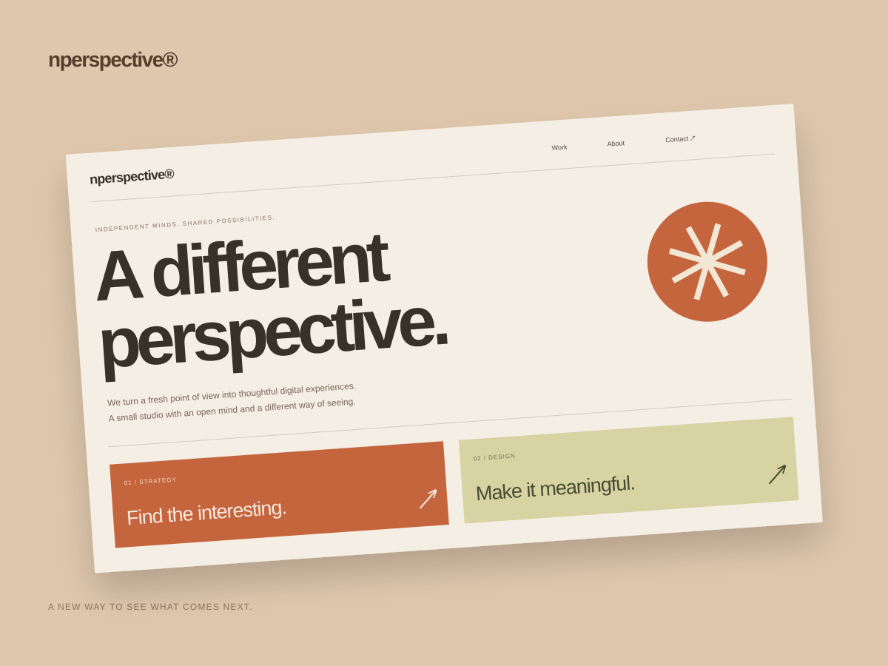
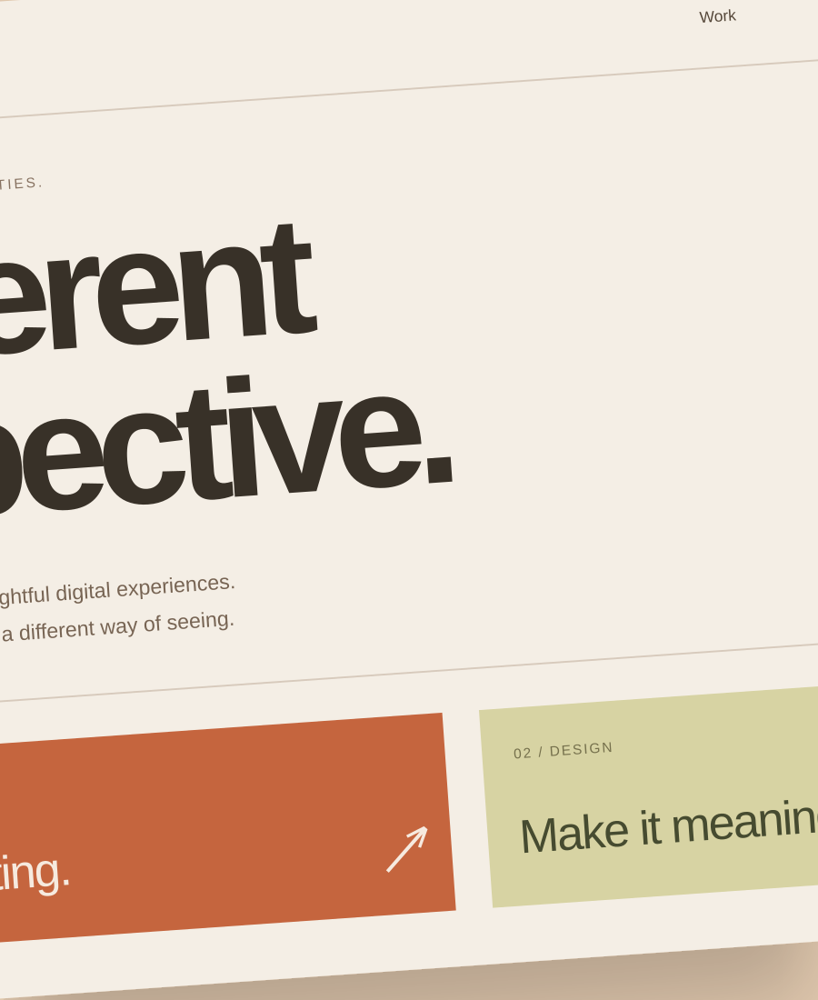
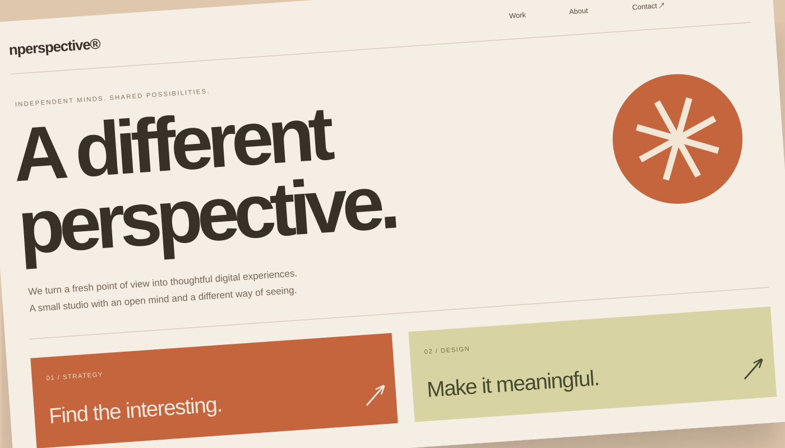
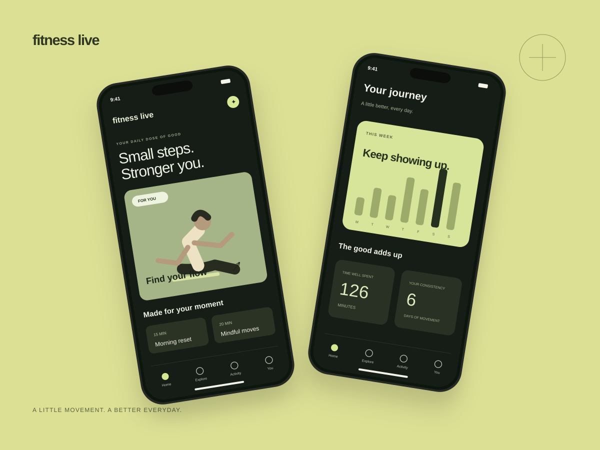

Nperspective
Making space for a different perspective.
An illustrative digital studio concept with an expressive identity and a modular website that balances personality with a clear presentation of work.
- Services
- Visual identityWeb designDesign systems
- Industry
- Digital experience
- Year
- 2023
- Project type
- Illustrative concept
Problem &
perspective.
The challenge
How might we communicate a creative point of view while making the studio’s expertise and process easy to explore?
A considered approach
Build a recognizable typographic rhythm, then use a flexible grid to create moments of surprise. Keep navigation and calls to action consistent.


Nperspective®
A new perspective on what comes next.

Designed around
the everyday.
An editorial homepage, project storytelling system, and a compact visual language. Warm paper tones and a confident orange accent give the concept its character.
Personality with purpose
A flexible visual rhythm
Space for the work
DM Sans
ABCDEFGHIJKLMNOPQRSTUVWXYZ
abcdefghijklmnopqrstuvwxyz
0123456789 — !?&@
The details.
The difference.
A new perspective on what comes next. A visual direction built around personality with purpose, a flexible visual rhythm, space for the work.
Illustrative case study with original concept artwork. Replace these visuals and descriptions with approved project work; no client results or measured outcomes are claimed.
LET’S DISCUSS YOUR PROJECT